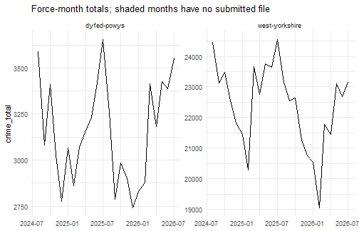

This vignette follows a crime panel from the published archive to a table you can estimate on, and shows what the package refuses to do quietly along the way.
The archive is a stack of snapshots, not a database
data.police.uk publishes one zip per month. Each holds every force’s
street, outcomes and stop-and-search files for a window of months, so
the same force-month appears in many snapshots and its contents can
differ between them. streetlamp never merges those
versions: it lists them, picks one by an explicit rule, and records the
alternatives.
The package ships two miniature snapshots so that this runs offline.
cache <- tempfile("streetlamp-cache-")
zips <- list.files(
system.file("extdata", "archive", package = "streetlamp"),
pattern = "zip$", full.names = TRUE
)
for (z in zips) lamp_archive_register(z, dir = cache)
#> Registered archive "2026-06" from
#> 'C:/Users/musta/Dropbox/stop and search/streetlamp/inst/extdata/archive/2026-06.zip'.
#> Registered archive "2026-07" from
#> 'C:/Users/musta/Dropbox/stop and search/streetlamp/inst/extdata/archive/2026-07.zip'.
snap <- lamp_archive_snapshot(cache)
snap
#>
#> ── streetlamp archive snapshot
#> Cache:
#> 'C:\Users\musta\AppData\Local\Temp\RtmpCg2ksz\streetlamp-cache-87186305e51'
#> 2 archives: "2026-06" and "2026-07"
#> 25 force-month files covering 2 forces, 2026-05 to 2026-07; 25 available
#> locally.
#> outcomes: 10 of 10 available
#> stop-and-search: 5 of 5 available
#> street: 10 of 10 availableTwo snapshots cover the same months, so most files exist twice.
versions <- lamp_list_versions(snap)
versions[, c("force_id", "month", "file_type", "n_versions", "differs")]
#> # A tibble: 15 × 5
#> force_id month file_type n_versions differs
#> <chr> <date> <chr> <int> <lgl>
#> 1 dyfed-powys 2026-05-01 outcomes 2 TRUE
#> 2 dyfed-powys 2026-05-01 street 2 TRUE
#> 3 dyfed-powys 2026-06-01 outcomes 2 TRUE
#> 4 dyfed-powys 2026-06-01 street 2 TRUE
#> 5 dyfed-powys 2026-07-01 outcomes 1 FALSE
#> 6 dyfed-powys 2026-07-01 street 1 FALSE
#> 7 west-yorkshire 2026-05-01 outcomes 2 TRUE
#> 8 west-yorkshire 2026-05-01 stop-and-search 2 FALSE
#> 9 west-yorkshire 2026-05-01 street 2 TRUE
#> 10 west-yorkshire 2026-06-01 outcomes 2 FALSE
#> 11 west-yorkshire 2026-06-01 stop-and-search 2 FALSE
#> 12 west-yorkshire 2026-06-01 street 2 TRUE
#> 13 west-yorkshire 2026-07-01 outcomes 1 FALSE
#> 14 west-yorkshire 2026-07-01 stop-and-search 1 FALSE
#> 15 west-yorkshire 2026-07-01 street 1 FALSEdiffers compares checksums. Street files almost always
differ between snapshots, because outcomes attached to old crimes keep
being updated, so a checksum change does not mean the force re-supplied
the month. To see what actually changed, compare the versions:
lamp_version_diff(snap, "west-yorkshire", "2026-05", "outcomes")
#> # A tibble: 2 × 5
#> archive n_rows n_ids ids_not_in_others crc32
#> <chr> <int> <int> <int> <chr>
#> 1 2026-06 1761 1728 3 efe93414
#> 2 2026-07 1756 1725 0 34133345Ten crime identifiers present in the June snapshot are gone from the July one. That is a real revision, and it is why the version used is recorded in the contract of everything built from it.
Reading
The readers return a fixed schema with the raw labels preserved.
crime <- lamp_read_crime(snap)
crime[1:3, c("crime_id", "month", "force_id", "crime_type", "lsoa_code", "is_asb")]
#> streetlamp records with a contract; see `lamp_contract()`.
#> # A tibble: 3 × 6
#> crime_id month force_id crime_type lsoa_code is_asb
#> <chr> <date> <chr> <fct> <chr> <lgl>
#> 1 ce14ac1ee92bd5104fd7ddf3eb096… 2026-05-01 dyfed-p… Criminal … W01000685 FALSE
#> 2 b7b0a7355ff6650a586ba6fd52772… 2026-05-01 dyfed-p… Other the… W01000685 FALSE
#> 3 623a7bcbb78a6f2cf807cb6607cb9… 2026-05-01 dyfed-p… Other the… W01000685 FALSETwo things are worth pausing on.
asb <- crime[crime$is_asb, ]
c(asb_rows = nrow(asb), with_a_crime_id = sum(!is.na(asb$crime_id)))
#> asb_rows with_a_crime_id
#> 962 0Anti-social behaviour carries no crime identifier and no outcome, because it is not a crime. It stays in its own series and out of the crime total.
lamp_lsoa_vintage(crime)[, c("force_id", "month", "vintage", "basis", "n_only_2021")]
#> # A tibble: 6 × 5
#> force_id month vintage basis n_only_2021
#> <chr> <date> <chr> <chr> <int>
#> 1 dyfed-powys 2026-05-01 lsoa21 codes 2
#> 2 dyfed-powys 2026-06-01 lsoa21 codes 2
#> 3 dyfed-powys 2026-07-01 lsoa21 codes 2
#> 4 west-yorkshire 2026-05-01 lsoa21 codes 5
#> 5 west-yorkshire 2026-06-01 lsoa21 codes 5
#> 6 west-yorkshire 2026-07-01 lsoa21 codes 5The publisher moved from 2011 to 2021 LSOA boundaries with the June 2023 data, but archive snapshots keep each month at the vintage it was first published with. The reader therefore detects the vintage of every file separately, by matching codes against the bundled ONS lists.
Building the panel
lamp_panel() turns records into a balanced area-by-month
table. The panel covers every area in the police force areas of the
forces present, not only the areas that happen to have a recorded
crime.
panel <- lamp_panel(crime, area = "lad")
panel[1:4, c("area", "month", "force_id", "crime_total", "asb", "coverage_status")]
#> streetlamp panel: 2 lad area x 3 months; see `lamp_contract()` and
#> `lamp_coverage()`.
#> # A tibble: 4 × 6
#> area month force_id crime_total asb coverage_status
#> <chr> <date> <chr> <int> <int> <chr>
#> 1 E08000032 2026-05-01 west-yorkshire 0 0 submitted
#> 2 E08000032 2026-06-01 west-yorkshire 0 0 submitted
#> 3 E08000032 2026-07-01 west-yorkshire 0 0 submitted
#> 4 E08000033 2026-05-01 west-yorkshire 0 0 submittedDistricts with no recorded crime in a submitted month are zeros.
Districts in a month the force did not submit are NA. That
distinction is the point:
wider <- lamp_read_crime(snap, months = c("2026-04", "2026-05"), forces = c("dyfed-powys", "west-yorkshire"))
gap <- lamp_panel(wider, area = "lad")
table(gap$coverage_status, is.na(gap$crime_total))
#>
#> FALSE TRUE
#> missing 0 9
#> submitted 9 0April is missing from both forces in these snapshots, so every April
cell is NA rather than zero. An estimator that treated
those as zero crimes would read the gap as a collapse in crime.
The coverage audit
stops <- lamp_read_stop_counts(snap, forces = c("west-yorkshire", "dyfed-powys"))
full <- lamp_panel(crime, stops = NULL, area = "pfa")
cov <- lamp_coverage(stops)
cov
#> streetlamp coverage: 2 forces, 1 file type, 0 mismatched force-months.
#> # A tibble: 6 × 10
#> force_id month file_type status n_records archive n_versions
#> <chr> <date> <chr> <chr> <int> <chr> <int>
#> 1 dyfed-powys 2026-05-01 stop-and-search missing NA <NA> 0
#> 2 dyfed-powys 2026-06-01 stop-and-search missing NA <NA> 0
#> 3 dyfed-powys 2026-07-01 stop-and-search missing NA <NA> 0
#> 4 west-yorkshire 2026-05-01 stop-and-search submit… 1254 2026-07 2
#> 5 west-yorkshire 2026-06-01 stop-and-search submit… 1095 2026-07 2
#> 6 west-yorkshire 2026-07-01 stop-and-search submit… 1130 2026-07 1
#> # ℹ 3 more variables: versions_differ <lgl>, note <chr>, mismatch <lgl>Dyfed-Powys submitted crime files for these months but no stop-and-search files. The audit marks that mismatch, because a month with an outcome and no treatment measurement cannot contribute to an estimate of the treatment’s effect.
lamp_coverage_compare(
cov, c("2026-05", "2026-05"), c("2026-06", "2026-07"),
file_type = "stop-and-search"
)
#> # A tibble: 2 × 12
#> force_id n_months_a n_usable_a n_months_b n_usable_b n_partial_a n_partial_b
#> <chr> <int> <int> <int> <int> <int> <int>
#> 1 dyfed-pow… 1 0 2 0 0 0
#> 2 west-york… 1 1 2 2 0 0
#> # ℹ 5 more variables: n_refreshed_a <int>, n_refreshed_b <int>,
#> # n_mismatch_a <int>, n_mismatch_b <int>, comparable <lgl>The contract
Everything built from the archive carries its provenance.
lamp_contract(panel)The contract travels with the table through subsetting and dplyr verbs, and a copy is attached to every estimate, so a result can always be traced back to the snapshot and version it came from.
The bundled sample
A ready-made panel of both sample forces over two years is included, which the other vignettes use.
sample_panel <- lamp_sample_panel()
sample_panel
#> streetlamp panel: 1710 lsoa21 area x 24 months; see `lamp_contract()` and
#> `lamp_coverage()`.
#> # A tibble: 41,040 × 27
#> area month force_id bicycle_theft burglary criminal_damage_and_…¹ drugs
#> <chr> <date> <chr> <int> <int> <int> <int>
#> 1 E010… 2024-08-01 west-yo… 0 0 2 0
#> 2 E010… 2024-09-01 west-yo… 0 0 0 0
#> 3 E010… 2024-10-01 west-yo… 0 0 1 0
#> 4 E010… 2024-11-01 west-yo… 0 4 2 0
#> 5 E010… 2024-12-01 west-yo… 0 0 1 0
#> 6 E010… 2025-01-01 west-yo… 0 2 1 0
#> 7 E010… 2025-02-01 west-yo… 0 1 1 0
#> 8 E010… 2025-03-01 west-yo… 0 2 0 0
#> 9 E010… 2025-04-01 west-yo… 0 2 0 0
#> 10 E010… 2025-05-01 west-yo… 0 0 0 0
#> # ℹ 41,030 more rows
#> # ℹ abbreviated name: ¹criminal_damage_and_arson
#> # ℹ 20 more variables: other_crime <int>, other_theft <int>,
#> # possession_of_weapons <int>, public_order <int>, robbery <int>,
#> # shoplifting <int>, theft_from_the_person <int>, vehicle_crime <int>,
#> # violence_and_sexual_offences <int>, crime_total <int>, asb <int>,
#> # stops <int>, stops_s60 <int>, population <dbl>, stop_rate <dbl>, …
table(lamp_coverage(sample_panel)$status)
#>
#> missing submitted
#> 8 88
plot(sample_panel)
plot of chunk plot-panel